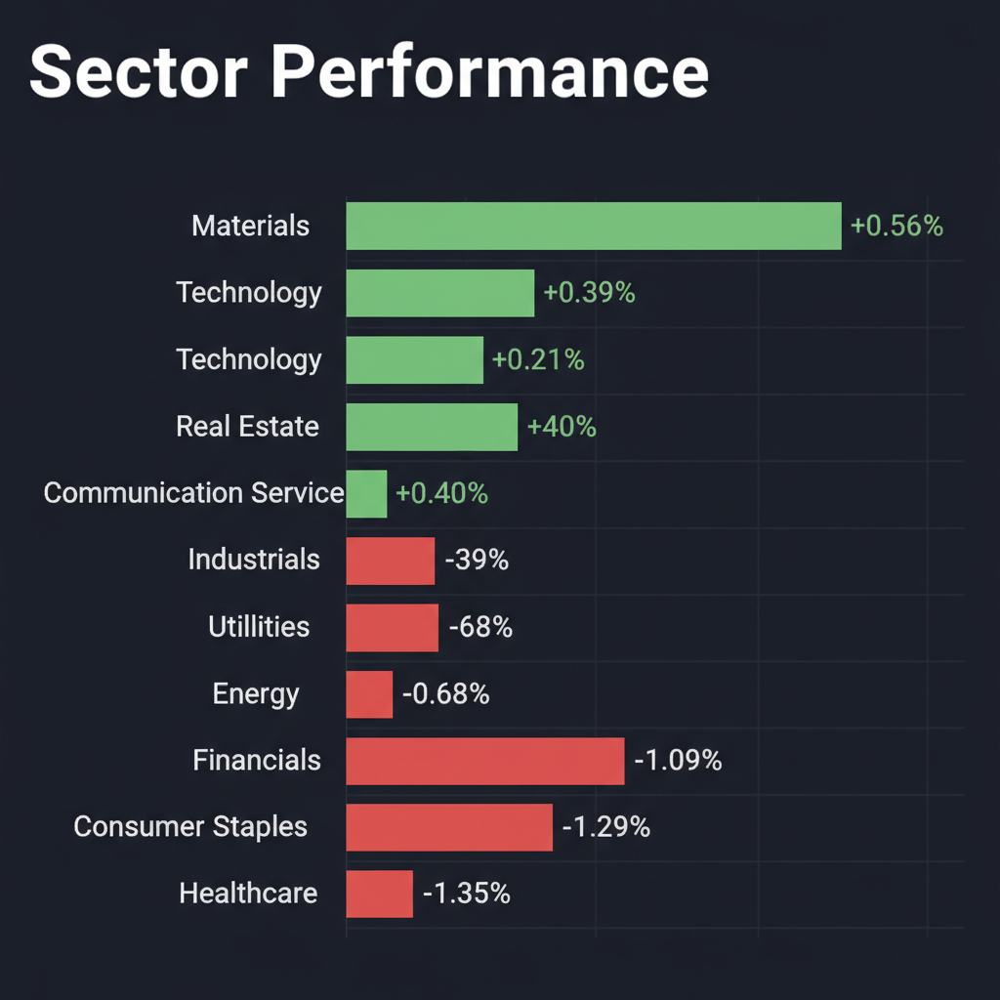
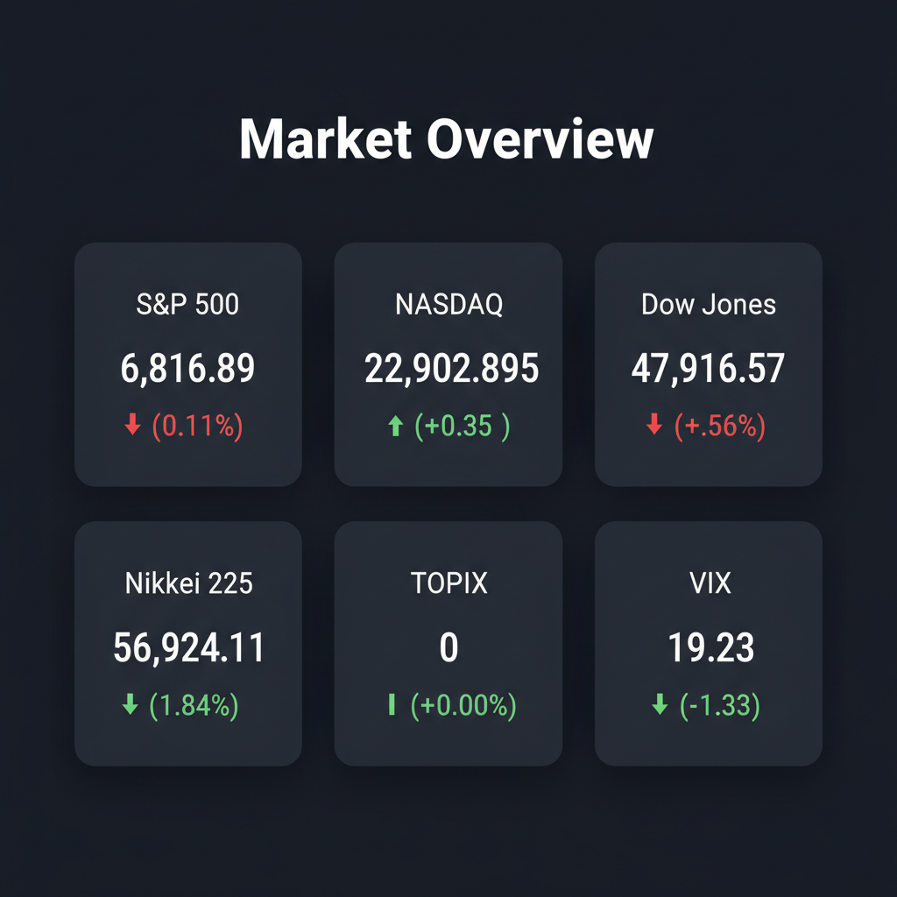

Daily Investment Report - 2026-04-11
Generated: 2026/4/11 8:17:54


【投資家向け最終レポート】米国・日本市場の最新動向と投資戦略
1. エグゼクティブサマリー
- 米・イランの停戦合意により市場は一時的なリスクオン（日経急反発等）に傾いていますが、極端な「自信過剰」状態にあり実体経済と乖離しています。
- 米消費者マインドの「過去最低」への急落と、ホルムズ海峡の封鎖継続による原油供給リスクが重なり、スタグフレーションの足音が迫っています。
- 投資家は直ちに現金比率を引き上げ、ヘッジを構築するとともに、マクロの逆風に耐えうる強固な財務を持つ中小型株へ投資対象を厳選すべきです。
2. 注目銘柄リスト
強気（買い推奨）
- ビジョナル（4194） [中型株]: 第2四半期の経常利益が30.3%増。労働市場の流動性向上という構造的トレンドの恩恵を受け、高い粗利率とフリーキャッシュフローを誇ります。
- インテージHD（4326） [小型株]: 第2四半期の経常利益が36.5%増。不況下でも解約率が低いストック型ビジネスであり、成長率に対して割安に放置されている典型的なGARP（成長を伴う割安株）です。
- Organon（OGN） [中型株]: Sun Pharmaによる約120億ドルでの買収報道が出ており、強力な営業キャッシュフローと低PERを持つバリュー株として、買収有無に関わらず下値不安が限定的です。
- BiomX（PHGE） [小型株]: 防衛AI企業「Zorronet」を買収し、将来的に810億ドル規模となるコマンド＆コントロール市場へ参入。サイバー・防衛の巨大テーマに乗る爆発力を持ったテンバガー候補です。
中立（様子見）
- ビックカメラ（3048） [中型株]: パソコン・カメラ需要を取り込み今期業績を上方修正しましたが、今後の急激な消費者マインドの冷え込みが波及するリスクがあり、バリュエーションの下値支持線を確認するまでは押し目待ちを推奨します。
- メルカリ（4385） [中型株]: チャート上では長年の底練りから上方ブレイクアウトの兆しを見せていますが、消費悪化の直撃を受けるセクターであるため、テクニカルな「ダマシ」に終わる警戒が必要です。
弱気（警戒）
- J-テンダ [小型株]: 第2四半期の経常利益が88.3%減。構造的な問題が利益を直撃しており、株価が下がっても手を出してはいけない典型的なバリュートラップ（割安の罠）です。
- 米国地銀関連銘柄全般 [中小規模]: 消費悪化によるローンの焦げ付きリスクと預金流出懸念が再燃するため、ボラティリティを避けるべく投資対象から除外すべきです。
3. セクター推奨ランキング
- 1位: エネルギー（XLE） - ホルムズ海峡の実質的な機能停止と2026年の供給不足予測を背景に、価格上昇圧力が高まっておりインフレヘッジとして最適です。
- 2位: サイバーセキュリティ・防衛 - OpenAIトップへの襲撃事件やイランの通信遮断が示す通り、企業・国家のセキュリティ需要は景気に関わらず非弾力的に増加します。
- 3位: 素材（XLB） - サプライチェーンの混乱とコモディティ価格上昇に対するインフレヘッジとして、スマートマネーの流入が期待できます。
- 4位（回避推奨）: 一般消費財・小売（XLY） - 米国の消費者信頼感が過去最低に急落しており、購買力低下による業績悪化の直撃を受けるためアンダーウェイトとします。
- 5位（回避推奨）: 金融（XLF） - マクロ指標の悪化とFRBの政策ジレンマにより、金利動向が不安定化しやすくボラティリティの増大が懸念されます。
4. 今週の注目イベント
- 4月13日: 植田和男日銀総裁による信託大会での発言（中東情勢や為替政策への言及）
- 4月15日: 米ベージュブック（地区連銀景況報告）の発表
- 今週本格化: 米国金融大手の四半期決算発表
- 日程未定: トランプ政権が次期FRB議長に指名したウォーシュ氏の議会承認の行方
5. リスク要因
- スタグフレーションの顕在化: 原油価格の高騰によるインフレ再燃と、米消費者マインドの過去最低水準への崩壊が同時進行するリスク。
- 急激な「円高ショック」の巻き戻し: 米景気悪化に伴う利下げ観測と日銀のタカ派転換が重なり、日経平均を支えている「1ドル160円」の前提が崩れ、輸出・ハイテク株が暴落するリスク。
- AI・ハイテク企業の「キーマン・リスク」: OpenAIトップへの襲撃事件に象徴される、テクノロジー企業に対する物理的・サイバー的テロリズムの標的化リスク。
- VIX低下の罠: 市場参加者が極端な自信過剰に陥り、ホルムズ海峡の実質的封鎖といった重大な地政学リスクを株価に織り込んでいないリスク。
6. アクションアイテム
- 現金比率の引き上げ: 現在の極端なバリュエーションとマクロの乖離に備え、ポートフォリオの株式ロングポジションを縮小し、現金比率を30%〜40%へ引き上げてください。
- エネルギーセクターへのヘッジ構築: 地政学リスクと供給不足に備え、ポートフォリオの5〜10%をエネルギー（石油・ガス）関連に配分し、インフレヘッジとして機能させてください。
- 利益確定とストップロスの徹底: 大幅に上昇したモメンタム株（大型ハイテク株等）は20〜30%を利益確定（トリム）し、残りのポジションには現在値から5〜8%下に厳格な逆指値（ストップロス）を設定してください。
- 新規投資の選別: マクロの逆風に耐えられる、顧客基盤が強固で高マージンの「純内需・中小型株（ビジョナルやインテージHDなど）」にのみ限定して押し目買いを検討してください。